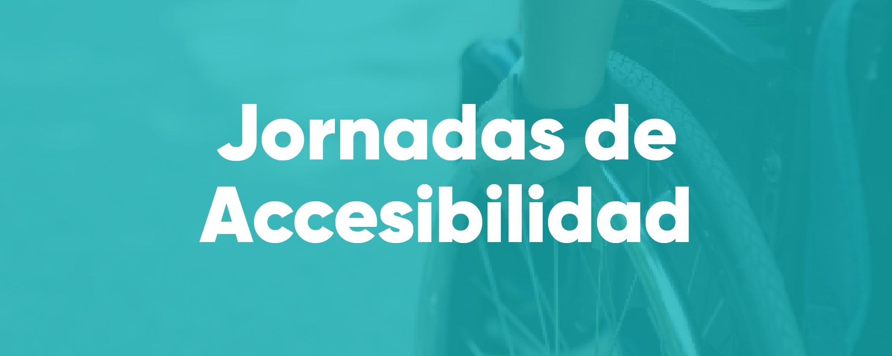
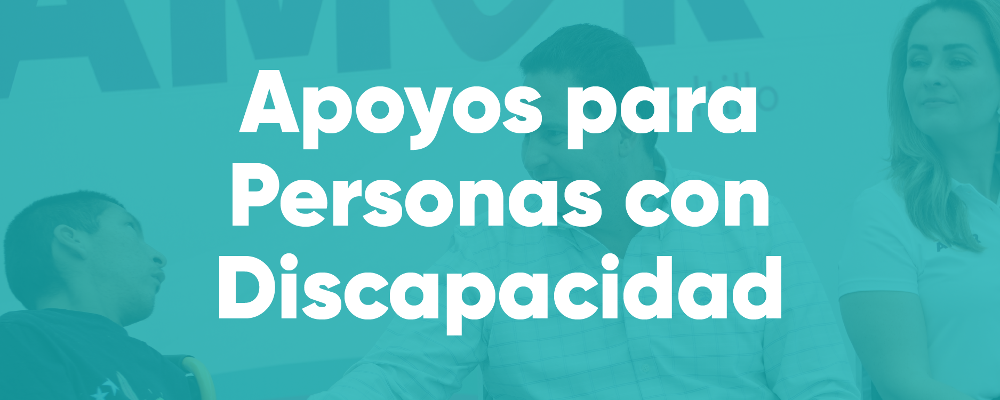
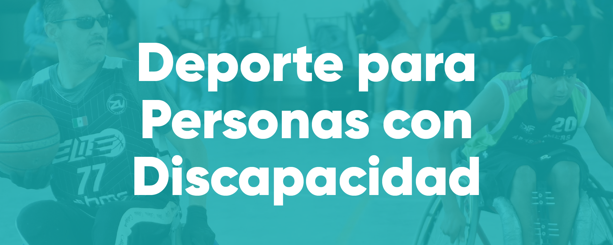

-

Las Jornadas de Accesibilidad para Personas con Discapacidad son una iniciativa del DIF Saltillo que busca sensibilizar a la comunidad y promover espacios físicos y sociales más inclusivos. A través de talleres, actividades culturales, capacitaciones y ejercicios vivenciales, estas jornadas acercan a la ciudadanía a una visión más empática sobre la discapacidad. Este programa está dirigido a escuelas, empresas, instituciones públicas y privadas, y a toda persona interesada en aprender sobre accesibilidad e inclusión en Saltillo.
-

El programa de Apoyos para Personas con Discapacidad del DIF Saltillo tiene como finalidad mejorar la calidad de vida de niñas, niños, adolescentes, personas adultas y personas mayores con alguna discapacidad. A través de este programa se otorgan diversos apoyos, que pueden incluir: Este servicio está disponible para personas con discapacidad que residan en Saltillo.
-
El programa Ponte las Pilas del DIF Saltillo está enfocado en formar a personas con discapacidad para que puedan integrarse activamente en puestos de trabajo. A través de cursos, talleres y capacitaciones, las y los participantes adquieren habilidades laborales, conocimientos técnicos y herramientas de desarrollo humano que les permiten mejorar su autonomía y empleabilidad. Este programa busca reducir barreras de acceso al empleo formal, promoviendo la inclusión laboral y la igualdad de oportunidades para personas con discapacidad en Saltillo. También se vincula con empresas socialmente responsables que abren espacios de trabajo inclusivos.
-

El Programa de Implantes Cocleares del DIF Saltillo está diseñado para beneficiar a menores con pérdida auditiva severa que no pueden ser beneficiados con auxiliares convencionales. El implante coclear les permite acceder a sonidos, desarrollarse emocional y socialmente, y facilitar su proceso de aprendizaje. A través de este programa, se brinda acompañamiento médico, canalización a instancias especializadas y apoyo en los trámites necesarios para acceder a la cirugía. El objetivo es lograr una inclusión auditiva y educativa efectiva.
-
Sumando Con Amor es una iniciativa del DIF Saltillo que busca involucrar a la ciudadanía en acciones de concientización, voluntariado y apadrinamiento de personas con discapacidad. El programa genera puentes de solidaridad a través de eventos especiales, campañas de sensibilización y actividades donde el amor y el compromiso social son el eje principal. Está abierto a familias, estudiantes, empresas y toda persona que quiera contribuir al bienestar de quienes viven con discapacidad en Saltillo.
-

El programa Deporte para Personas con Discapacidad del DIF Saltillo fomenta la inclusión a través del ejercicio físico. Ofrece espacios seguros y actividades deportivas adaptadas a las necesidades de niñas, niños, adolescentes y personas adultas con discapacidad.